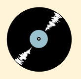
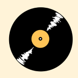
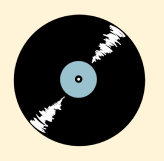
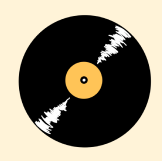

My Rome Experience Website
Dit is de eerste website die ik heb gemaakt, waarin ik mijn ervaringen in Rome deel, volledig opgebouwd met HTML en CSS.
Tijdens dit project heb ik veel geleerd over het toepassen van code.

Hieronder zie je een selectie van mijn eerstejaars school projecten.
Dit is de eerste website die ik heb gemaakt, waarin ik mijn ervaringen in Rome deel, volledig opgebouwd met HTML en CSS.
Tijdens dit project heb ik veel geleerd over het toepassen van code.


Voor dit project heb ik een mobiele website ontwikkeld over de duurzaamheid van de winkel Episode, met HTML , CSS, Illustrator en Procreate.
De opdracht was om een mobiele site te maken met een duurzaam thema, en ik koos voor de tweedehands winkel Episode. Ik vond dit project ontzettend leuk omdat ik creatief aan de slag kon gaan met een vintage stijl en een bijpassend kleurenpalet.
 



Ik heb een avatar-minigame ontwikkeld waarbij je een eigen personage kunt samenstellen en naar een evenement kunt gaan, gebouwd met HTML, CSS, JavaScript en Procreate.
Dit was mijn eerste ervaring met JavaScript. In het begin vond ik het uitdagend, maar uiteindelijk heb ik er veel van geleerd en begrijp ik nu veel beter hoe het werkt.


Tijdens dit project leerde ik de basisprincipes van webontwikkeling, zoals HTML, CSS, en JavaScript. Het was een uitdagend en leerzaam proces dat mijn interesse in coderen heeft versterkt.
Dit project heeft me laten zien hoe belangrijk het is om een goed ontwerp en functionaliteit te combineren.

Voor de gemeente Amsterdam ontwikkelden we een boekenzoeker-app voor tablets, speciaal
gericht op jongeren die op zoek zijn naar een boek. Gemaakt in FIgma met Illustrator en Procreate.
In dit project werkten we met GIF's en illustraties om de app aantrekkelijker en interactiever te maken.

We ontwikkelden een app waarmee gebruikers eenvoudig gezonde voedingsopties kunnen vinden in de kantine van de HvA. De opdracht was om de app te ontwerpen voor een specifieke doelgroep, met het thema "gezonde voeding."
Ik werkte in een team van twee, wat ik erg leuk vond omdat we ideeën en perspectieven konden uitwisselen en elkaar inspireerden. Gemaakt met Xd en Illustrator.
App is gemaakt voor iPhone 14 Pro schermen.
 1.png)
Voor deze opdracht heb ik drie onepagers gemaakt voor het festival Public City Jazz, in drie formaten: telefoon, iPad en desktop. Hierbij moest de huisstijl van de gemeente Rotterdam duidelijk terugkomen. Daarnaast heb ik ook een gif ontworpen die bij het festival past.
Ik vond deze opdracht erg leuk, omdat ik door de feedback steeds nieuwe ideeën kon uitwerken en verbeteren. Om de ontwerpen consistent te houden, heb ik een aantal richtlijnen opgesteld, zoals het gebruik van rechte hoeken en de kleuren van de gemeente Rotterdam. Op de voorpagina heb ik de skyline van Rotterdam verwerkt en een jazzsfeer gecreëerd met het iconische figuur van een man met een saxofoon. Dit gaf mij de kans om mijn eigen stijl te combineren met de huisstijl van de gemeente Rotterdam.
De gif die ik heb ontworpen toont een klassieke, moderne jazzdans en sluit goed aan bij de sfeer van het festival. Deze opdracht was niet alleen leerzaam, maar ook heel leuk om te doen.